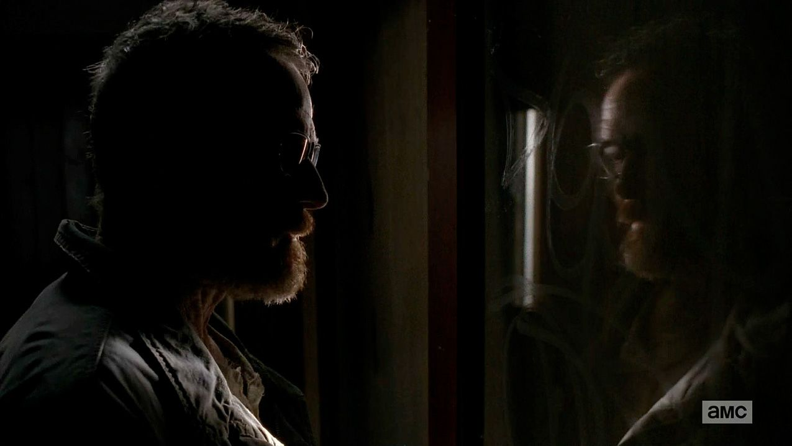

The Beauty of Breaking Bad
Breaking Bad is often praised for its superb cinematography and unique style of filming. Shots are carefully
thought out and are framed brilliantly, often to give it a certain atmosphere or give a scene an even deeper meaning.
This gallery is a showcase of some of the best and most iconic shots of Breaking Bad. You'll see the showrunners
have used a wide variety of lighting effects, colors, cameralenses and composition. Sometimes they'll use wide
shots and sometimes they'll use close-up shots. Some shots are very dark while others are filled with light and
colors. The focus is everchanging depending on what the showrunners want the audience to notice first.
Bron: https://www.reddit.com/r/breakingbad/comments/1rhi29/one_of_my_favorite_shots_of_the_entire_series/
Bron: https://www.diyphotography.net/breaking-bad-the-cinematography-of-michael-slovis/
Bron: https://filmschoolrejects.com/breaking-bad-pov-shots/
Bron: https://nl.pinterest.com/pin/648236940089242310/?nic_v2=1a6TX2Z8M
Bron: http://syndicatedmagazine.com/2017/05/08/bottle-service-breaking-bad-fly/
Bron: https://www.abqjournal.com/867925/tale.html

Bron: https://www.diyphotography.net/breaking-bad-the-cinematography-of-michael-slovis/
Bron: https://www.businessinsider.com/breaking-bad-cameraman-tweets-behind-the-scenes-photos-2013-10?international=true&r=US&IR=T
Bron: https://www.diyphotography.net/breaking-bad-the-cinematography-of-michael-slovis/
Bron: https://www.forevergeek.com/breaking-bad-geeky-pop-culture-references-homages-and-shout-outs/